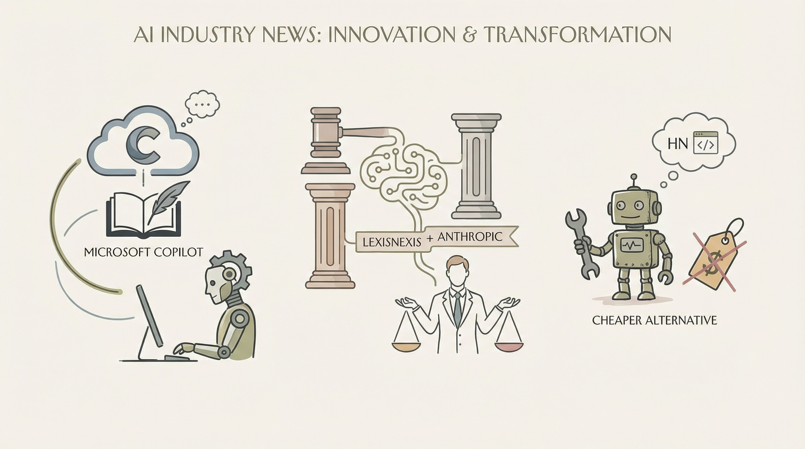

微软为Copilot Researcher引入新的AI能力
两克伴AIGC日报
2026-03-31 星期二

本期关注：微软为Copilot研究员带来新的AI功能、在压力之下，LexisNexis 整合 Anthropic 法律人工智能、展示HN：我制作了一个比Claude Code或Codex CLI更便宜的替代品、类人形机器人完成与SAP和Martur Fompak的现场HMND PoC - 机器人报告
📰 行业动态
LexisNexis整合Anthropic法律AI应对竞争
🔥 今日焦点
随着长周期代理工作流程的普及，高昂的token成本迅速消耗，导致实际工作难以开展。作者gr00ve在研究Anthropic和OpenAI等顶级实验室的商业模式后，发现其推理成本拥有约80%的利润率，用于研发下一代模型。基于开源模型成本较低且使用效率可提升5-10倍的优势，gr00ve创建了Sweet! CLI，作为大型实验室产品（如Claude Code或Codex CLI）的替代方案。这一举措对于AI领域具有重要意义，它不仅降低了AI工具的使用门槛，促进了开源模型的广泛应用，还为AI研究者提供了更具成本效益的解决方案，从而加速了AI技术的创新与发展。
---
近日，数字智能与体力劳动的界限愈发模糊。人工智能公司Humanoid（简称HMND）与SAP成功测试了将智能体AI应用于工业机器人的实时集成。此次合作，SAP、HMND及Martur Fompak共同展示了软件代理如何指导自主物理系统——如类人机器人——完成任务。在项目过程中，HMND 01 Alpha Wheeled机器人接收到SAP AI代理的任务指令，自主导航至指定托盘，取回KLT箱，并将其送至手推车。Humanoid创始人兼CEO Artem Sokolov表示：“这一概念验证展示了关键点：在真实生产环境中运行的类人机器人，连接到企业系统，并按照运营标准进行衡量。”项目完成后，合作伙伴还将共同评估概念验证结果，评估在Martur Fompak设施中部署Humanoid机器人的潜在路径，并探索更复杂的使用案例和工作流程场景。此次合作标志着人工智能在工业机器人领域的应用迈出了重要一步，对AI领域的发展具有重要意义。
---
Atlantic Health系统与Artera公司合作，将部署AI智能代理进行结肠镜检查患者的沟通。这一举措标志着Atlantic Health首次利用AI代理进行患者外联沟通，旨在提升患者体验并促进患者及时进行预防性检查。过去十年，医疗外联主要通过单向短信通知患者“按1确认”，而Artera在Atlantic Health的部署代表了向真正“智能代理AI”的转变，以引导患者完成结肠镜检查过程并缩小筛查差距。
AI代理在手术前一周开始对患者进行自动电话呼叫，提供个性化的沟通和指导。这一合作对于AI领域具有重要意义，它展示了AI在医疗健康领域的应用潜力，特别是在提高患者参与度和预防性医疗服务方面。通过AI智能代理的应用，不仅提升了患者体验，也为医疗健康行业带来了新的运营模式，有望推动AI在医疗领域的进一步发展和普及。
IAB近日正式认可了Agentic公司推出的《AI-Powered Video Outcomes: Agentic AI》白皮书，该白皮书深入探讨了自主AI系统如何重塑视频规划、优化、测量和创作的过程。白皮书强调了未来视频领域的发展趋势，包括标准化测量、明确执行指导原则以及增强AI决策过程的透明度。这些措施旨在将Agentic AI从实验阶段推向实际应用。
这份白皮书的重要性在于，它揭示了AI在视频领域的重要应用前景。随着69%的分析团队开始整合和扩展AI流程，AI在视频领域的应用正逐渐普及。Agentic AI的引入，不仅提高了视频创作的效率，还优化了视频的测量和评估，为整个视频行业带来了巨大的变革。
标题：Show HN：lmcli——一款优雅、沙箱化的Claude Code替代品
简介：
近日，开发者wolttam推出了名为`lmcli`的工具，旨在为LLM（大型语言模型）爱好者提供一款简洁、安全的替代方案。`lmcli`自2023年起开始研发，最初是为了满足作者对LLM技术的探索需求。尽管早期由于模型智能程度有限，`lmcli`主要用于简单的复制粘贴交互，但随着技术的进步，`lmcli`如今已具备与Claude Code相媲美的编码循环能力。
📚 深度长文
本周《How I AI》深度长文探讨了Stripe如何构建“小矮人”——每周可发布1300个PR的AI编码代理，以及如何将Claude Code转化为个人生活操作系统。文章核心观点在于，通过AI技术，企业可以实现自动化编码，提高开发效率，同时个人也能借助AI工具优化日常生活。关键论据包括Stripe的AI编码代理案例和Claude Code的应用场景。阅读此文章，AI从业者可以了解到AI在软件开发和日常生活中的实际应用，以及如何利用AI技术提升工作效率和生活品质。文章深度和独特见解体现在对AI技术的深入剖析和实际应用案例的分享，为读者提供了宝贵的参考和启示。
---
本文探讨了如何将Claude Code转化为个人生活操作系统的实用方法。作者Claire Vo以一位新晋妈妈和创业者的身份，分享了如何利用Claude Code自动化生活管理的经验。文章核心观点在于，通过简单的设置，Claude Code能够帮助用户实现生活管理的自动化，从而提高效率和生活质量。
文章中，作者详细介绍了Claude Code的使用方法，包括如何设置自动化任务、如何利用Claude Code处理日常事务等。关键论据包括：Claude Code操作简便，无需复杂设置；通过自动化生活管理，用户可以节省大量时间和精力，提高生活效率。
本文深入探讨了当前AI健康工具的广泛应用及其有效性。文章以微软和亚马逊近期推出的AI健康工具为例，揭示了这些工具如何通过连接用户医疗记录和提供个性化健康咨询来改善医疗服务。作者Grace Huckins指出，尽管AI健康工具数量激增，但它们在实际应用中的效果仍有待验证。文章通过分析关键论据，如工具的准确性和用户隐私保护，探讨了AI健康工具在提升医疗效率和患者体验方面的潜力与挑战。对于AI从业者而言，本文不仅提供了对当前AI健康工具现状的全面了解，还启发了对未来发展趋势的深入思考，具有极高的阅读价值。
🛠️ 产品推荐
Show HN: AI assistants confidently get SaaS product facts wrong 是一款AI辅助工具，旨在揭示ChatGPT、Claude、Gemini、Perplexity等AI助手在描述SaaS产品时存在的具体错误，如错误定价、已废弃功能、错误归因的集成等。该工具通过一致的买家风格提示在所有四个AI助手上进行测试，并展示其直接输出结果。该产品旨在让用户清晰地了解AI助手在提供产品信息时的局限性，帮助用户在决策时更加谨慎。
---
Show HN: Buyout Game Benchmark是一款多智能体谈判、转让和收购的模拟游戏。该产品通过模拟真实商业场景，帮助用户深入了解企业并购过程中的复杂性和策略制定。其核心功能包括多智能体交互、动态谈判机制以及收购决策支持。通过这款游戏，用户可以提升商业谈判技巧，锻炼战略思维，为实际商业活动提供有益参考。该产品适用于对商业谈判和战略决策感兴趣的从业者，特别适合技术背景的用户进行学习和实践。
---
Show HN: Agent Council 是一款基于 Claude、Codex 和 Gemini 的智能辩论平台，专注于代码和工程问题。该平台通过AI技术，模拟三位知名AI模型进行实时辩论，为技术从业者提供深度学习和交流的机会。用户可在此平台上提出问题，AI模型将展开激烈辩论，帮助用户更全面地理解问题本质，提高问题解决能力。Agent Council 的创新之处在于其独特的AI辩论机制，为技术社区带来全新的互动体验。